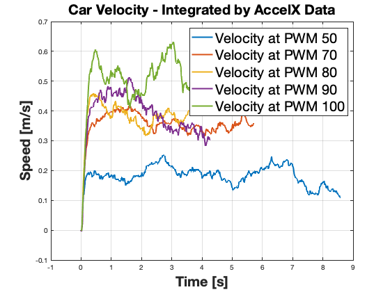

Contents
- Load Data
- Sort Data into Respective PWM Tests
- Calculate Averages of each PWM Tests
- Plot Car Response
- Formulate Systems T(s) --> Alpha / (Tau*s + 1) => First Order Dynamics
- Fit a line to find Voltage to PWM realation equation -- apply pwm for voltage output
- Discrete State Space & Observer Design
- Loop over different values of L
%Users / anthonypeters / Documents / MATLAB / MSME / Project %/AllMotorAvgData_106Capacitor %Compile all Motor AVG Data % 106 Capacitor = 10 uF clc;clear all ;clear; clear figure;close all; %%%%% Longitudunal Control Simulation and System Indentification
Load Data
directory = '/Users/anthonypeters/Documents/MATLAB/MSME/Project/106_Capacitor'; baseFileName_50 = '106_UnitStep_PWM50_Test'; baseFileName_70 = '106_UnitStep_PWM70_Test'; baseFileName_80 = '106_UnitStep_PWM80_Test'; baseFileName_90 = '106_UnitStep_PWM90_Test'; baseFileName_100 = '106_UnitStep_PWM100_Test'; files_50 = dir(fullfile(directory, [baseFileName_50, '*.csv'])); files_70 = dir(fullfile(directory, [baseFileName_70, '*.csv'])); files_80 = dir(fullfile(directory, [baseFileName_80, '*.csv'])); files_90 = dir(fullfile(directory, [baseFileName_90, '*.csv'])); files_100 = dir(fullfile(directory, [baseFileName_100, '*.csv'])); AllData_50 = cell(1, numel(files_50)); AllData_70 = cell(1, numel(files_70)); AllData_80 = cell(1, numel(files_80)); AllData_90 = cell(1, numel(files_90)); AllData_100 = cell(1, numel(files_100)); for i = 1:numel(files_50) filename_50 = fullfile(directory, files_50(i).name); filename_70 = fullfile(directory, files_70(i).name); filename_80 = fullfile(directory, files_80(i).name); filename_90 = fullfile(directory, files_90(i).name); filename_100 = fullfile(directory, files_100(i).name); data_50 = readmatrix(filename_50); % Adjust loading method according to your file format data_70 = readmatrix(filename_70); data_80 = readmatrix(filename_80); data_90 = readmatrix(filename_90); data_100 = readmatrix(filename_100); AllData_50{i} = data_50; AllData_70{i} = data_70; AllData_80{i} = data_80; AllData_90{i} = data_90; AllData_100{i} = data_100; end
Sort Data into Respective PWM Tests
distance = 2.13; %m % = 6.9 feet speed_total_50 = 0 ; speed_total_70 = 0 ; speed_total_80 = 0 ; speed_total_90 = 0 ; speed_total_100 = 0 ; for i = 1:numel(files_50) time_50{i} = AllData_50{i}(:,1); time_70{i} = AllData_70{i}(:,1); time_80{i} = AllData_80{i}(:,1); time_90{i} = AllData_90{i}(:,1); time_100{i} = AllData_100{i}(:,1); start_signal_50{i} = AllData_50{i}(:,2); start_signal_70{i} = AllData_70{i}(:,2); start_signal_80{i} = AllData_80{i}(:,2); start_signal_90{i} = AllData_90{i}(:,2); start_signal_100{i} = AllData_100{i}(:,2); motor_voltage_50{i} = AllData_50{i}(:,3); motor_voltage_70{i} = AllData_70{i}(:,3); motor_voltage_80{i} = AllData_80{i}(:,3); motor_voltage_90{i} = AllData_90{i}(:,3); motor_voltage_100{i} = AllData_100{i}(:,3); accel_X_50{i} = AllData_50{i}(:,4); accel_X_70{i} = AllData_70{i}(:,4); accel_X_80{i} = AllData_80{i}(:,4); accel_X_90{i} = AllData_90{i}(:,4); accel_X_100{i} = AllData_100{i}(:,4); accel_Y_50{i} = AllData_50{i}(:,5); accel_Y_70{i} = AllData_70{i}(:,5); accel_Y_80{i} = AllData_80{i}(:,5); accel_Y_90{i} = AllData_90{i}(:,5); accel_Y_100{i} = AllData_100{i}(:,5); battery_voltage_50{i} = AllData_50{i}(:,6); battery_voltage_70{i} = AllData_70{i}(:,6); battery_voltage_80{i} = AllData_80{i}(:,6); battery_voltage_90{i} = AllData_90{i}(:,6); battery_voltage_100{i} = AllData_100{i}(:,6); driving_50{i} = find(start_signal_50{i} == 1); driving_70{i} = find(start_signal_70{i} == 1); driving_80{i} = find(start_signal_80{i} == 1); driving_90{i} = find(start_signal_90{i} == 1); driving_100{i} = find(start_signal_100{i} == 1); motor_voltage_driving_50{i} = motor_voltage_50{i}(driving_50{i},:); motor_voltage_driving_70{i} = motor_voltage_70{i}(driving_70{i},:); motor_voltage_driving_80{i} = motor_voltage_80{i}(driving_80{i},:); motor_voltage_driving_90{i} = motor_voltage_90{i}(driving_90{i},:); motor_voltage_driving_100{i} = motor_voltage_100{i}(driving_100{i},:); accelX_driving_50{i} = accel_X_50{i}(driving_50{i},:); accelX_driving_70{i} = accel_X_70{i}(driving_70{i},:); accelX_driving_80{i} = accel_X_80{i}(driving_80{i},:); accelX_driving_90{i} = accel_X_90{i}(driving_90{i},:); accelX_driving_100{i} = accel_X_100{i}(driving_100{i},:); accelY_driving_50{i} = accel_Y_50{i}(driving_50{i},:); accelY_driving_70{i} = accel_Y_70{i}(driving_70{i},:); accelY_driving_80{i} = accel_Y_80{i}(driving_80{i},:); accelY_driving_90{i} = accel_Y_90{i}(driving_90{i},:); accelY_driving_100{i} = accel_Y_100{i}(driving_100{i},:); battery_voltage_driving_50{i} = battery_voltage_50{i}(driving_50{i},:); battery_voltage_driving_70{i} = battery_voltage_70{i}(driving_70{i},:); battery_voltage_driving_80{i} = battery_voltage_80{i}(driving_80{i},:); battery_voltage_driving_90{i} = battery_voltage_90{i}(driving_90{i},:); battery_voltage_driving_100{i} = battery_voltage_100{i}(driving_100{i},:); Time_driving_50{i} = time_50{i}(driving_50{i},:); Time_driving_70{i} = time_70{i}(driving_70{i},:); Time_driving_80{i} = time_80{i}(driving_80{i},:); Time_driving_90{i} = time_90{i}(driving_90{i},:); Time_driving_100{i} = time_100{i}(driving_100{i},:); t_50{i} = Time_driving_50{i} - Time_driving_50{i}(1); t_70{i} = Time_driving_70{i} - Time_driving_70{i}(1); t_80{i} = Time_driving_80{i} - Time_driving_80{i}(1); t_90{i} = Time_driving_90{i} - Time_driving_90{i}(1); t_100{i} = Time_driving_100{i} - Time_driving_100{i}(1); end
Calculate Averages of each PWM Tests
%%%ReSizeMatrixes to take averages motor_voltage_driving_maxRows_50 = max(cellfun(@(x) size(x, 1), motor_voltage_driving_50)); motor_voltage_driving_maxCols_50 = max(cellfun(@(x) size(x, 2), motor_voltage_driving_50)); motor_voltage_driving_Sum_50 = zeros(motor_voltage_driving_maxRows_50, motor_voltage_driving_maxCols_50); motor_voltage_driving_maxRows_70 = max(cellfun(@(x) size(x, 1), motor_voltage_driving_70)); motor_voltage_driving_maxCols_70 = max(cellfun(@(x) size(x, 2), motor_voltage_driving_70)); motor_voltage_driving_Sum_70 = zeros(motor_voltage_driving_maxRows_70, motor_voltage_driving_maxCols_70); motor_voltage_driving_maxRows_80 = max(cellfun(@(x) size(x, 1), motor_voltage_driving_80)); motor_voltage_driving_maxCols_80 = max(cellfun(@(x) size(x, 2), motor_voltage_driving_80)); motor_voltage_driving_Sum_80 = zeros(motor_voltage_driving_maxRows_80, motor_voltage_driving_maxCols_80); motor_voltage_driving_maxRows_90 = max(cellfun(@(x) size(x, 1), motor_voltage_driving_90)); motor_voltage_driving_maxCols_90 = max(cellfun(@(x) size(x, 2), motor_voltage_driving_90)); motor_voltage_driving_Sum_90 = zeros(motor_voltage_driving_maxRows_90, motor_voltage_driving_maxCols_90); motor_voltage_driving_maxRows_100 = max(cellfun(@(x) size(x, 1), motor_voltage_driving_100)); motor_voltage_driving_maxCols_100 = max(cellfun(@(x) size(x, 2), motor_voltage_driving_100)); motor_voltage_driving_Sum_100 = zeros(motor_voltage_driving_maxRows_100, motor_voltage_driving_maxCols_100); accelX_driving_maxRows_50 = max(cellfun(@(x) size(x, 1), accelX_driving_50)); accelX_driving_maxCols_50 = max(cellfun(@(x) size(x, 2), accelX_driving_50)); accelX_driving_Sum_50 = zeros(accelX_driving_maxRows_50, accelX_driving_maxCols_50); accelX_driving_maxRows_70 = max(cellfun(@(x) size(x, 1), accelX_driving_70)); accelX_driving_maxCols_70 = max(cellfun(@(x) size(x, 2), accelX_driving_70)); accelX_driving_Sum_70 = zeros(accelX_driving_maxRows_70, accelX_driving_maxCols_70); accelX_driving_maxRows_80 = max(cellfun(@(x) size(x, 1), accelX_driving_80)); accelX_driving_maxCols_80 = max(cellfun(@(x) size(x, 2), accelX_driving_80)); accelX_driving_Sum_80 = zeros(accelX_driving_maxRows_80, accelX_driving_maxCols_80); accelX_driving_maxRows_90 = max(cellfun(@(x) size(x, 1), accelX_driving_90)); accelX_driving_maxCols_90 = max(cellfun(@(x) size(x, 2), accelX_driving_90)); accelX_driving_Sum_90 = zeros(accelX_driving_maxRows_90, accelX_driving_maxCols_90); accelX_driving_maxRows_100 = max(cellfun(@(x) size(x, 1), accelX_driving_100)); accelX_driving_maxCols_100 = max(cellfun(@(x) size(x, 2), accelX_driving_100)); accelX_driving_Sum_100 = zeros(accelX_driving_maxRows_100, accelX_driving_maxCols_100); accelY_driving_maxRows_50 = max(cellfun(@(x) size(x, 1), accelY_driving_50)); accelY_driving_maxCols_50 = max(cellfun(@(x) size(x, 2), accelY_driving_50)); accelY_driving_Sum_50 = zeros(accelY_driving_maxRows_50, accelY_driving_maxCols_50); accelY_driving_maxRows_70 = max(cellfun(@(x) size(x, 1), accelY_driving_70)); accelY_driving_maxCols_70 = max(cellfun(@(x) size(x, 2), accelY_driving_70)); accelY_driving_Sum_70 = zeros(accelY_driving_maxRows_70, accelY_driving_maxCols_70); accelY_driving_maxRows_80 = max(cellfun(@(x) size(x, 1), accelY_driving_80)); accelY_driving_maxCols_80 = max(cellfun(@(x) size(x, 2), accelY_driving_80)); accelY_driving_Sum_80 = zeros(accelY_driving_maxRows_80, accelY_driving_maxCols_80); accelY_driving_maxRows_90 = max(cellfun(@(x) size(x, 1), accelY_driving_90)); accelY_driving_maxCols_90 = max(cellfun(@(x) size(x, 2), accelY_driving_90)); accelY_driving_Sum_90 = zeros(accelY_driving_maxRows_90, accelY_driving_maxCols_90); accelY_driving_maxRows_100 = max(cellfun(@(x) size(x, 1), accelY_driving_100)); accelY_driving_maxCols_100 = max(cellfun(@(x) size(x, 2), accelY_driving_100)); accelY_driving_Sum_100 = zeros(accelY_driving_maxRows_100, accelY_driving_maxCols_100); battery_voltage_driving_maxRows_50 = max(cellfun(@(x) size(x, 1),battery_voltage_driving_50)); battery_voltage_driving_maxCols_50 = max(cellfun(@(x) size(x, 2), battery_voltage_driving_50)); battery_voltage_driving_Sum_50 = zeros(battery_voltage_driving_maxRows_50, battery_voltage_driving_maxCols_50); battery_voltage_driving_maxRows_70 = max(cellfun(@(x) size(x, 1),battery_voltage_driving_70)); battery_voltage_driving_maxCols_70 = max(cellfun(@(x) size(x, 2), battery_voltage_driving_70)); battery_voltage_driving_Sum_70 = zeros(battery_voltage_driving_maxRows_70, battery_voltage_driving_maxCols_70); battery_voltage_driving_maxRows_80 = max(cellfun(@(x) size(x, 1),battery_voltage_driving_80)); battery_voltage_driving_maxCols_80 = max(cellfun(@(x) size(x, 2), battery_voltage_driving_80)); battery_voltage_driving_Sum_80 = zeros(battery_voltage_driving_maxRows_80, battery_voltage_driving_maxCols_80); battery_voltage_driving_maxRows_90 = max(cellfun(@(x) size(x, 1),battery_voltage_driving_90)); battery_voltage_driving_maxCols_90 = max(cellfun(@(x) size(x, 2), battery_voltage_driving_90)); battery_voltage_driving_Sum_90 = zeros(battery_voltage_driving_maxRows_90, battery_voltage_driving_maxCols_90); battery_voltage_driving_maxRows_100 = max(cellfun(@(x) size(x, 1),battery_voltage_driving_100)); battery_voltage_driving_maxCols_100 = max(cellfun(@(x) size(x, 2), battery_voltage_driving_100)); battery_voltage_driving_Sum_100 = zeros(battery_voltage_driving_maxRows_100, battery_voltage_driving_maxCols_100); t_maxRows_50 = max(cellfun(@(x) size(x, 1),t_50)); t_maxCols_50 = max(cellfun(@(x) size(x, 2), t_50)); t_Sum_50 = zeros(t_maxRows_50, t_maxCols_50);% Initialize a variable to store the total sum t_maxRows_70 = max(cellfun(@(x) size(x, 1),t_70)); t_maxCols_70 = max(cellfun(@(x) size(x, 2), t_70)); t_Sum_70 = zeros(t_maxRows_70, t_maxCols_70);% Initialize a variable to store the total sum t_maxRows_70 = max(cellfun(@(x) size(x, 1),t_70)); t_maxCols_70 = max(cellfun(@(x) size(x, 2), t_70)); t_Sum_70 = zeros(t_maxRows_70, t_maxCols_70);% Initialize a variable to store the total sum t_maxRows_80 = max(cellfun(@(x) size(x, 1),t_80)); t_maxCols_80 = max(cellfun(@(x) size(x, 2), t_80)); t_Sum_80 = zeros(t_maxRows_80, t_maxCols_80);% Initialize a variable to store the total sum t_maxRows_90 = max(cellfun(@(x) size(x, 1),t_90)); t_maxCols_90 = max(cellfun(@(x) size(x, 2), t_90)); t_Sum_90 = zeros(t_maxRows_90, t_maxCols_90);% Initialize a variable to store the total sum t_maxRows_100 = max(cellfun(@(x) size(x, 1),t_100)); t_maxCols_100 = max(cellfun(@(x) size(x, 2), t_100)); t_Sum_100 = zeros(t_maxRows_100, t_maxCols_100);% Initialize a variable to store the total sum for i = 1:numel(files_50) % motor_voltage_driving_Data_50 = imresize(motor_voltage_driving_50{i}, [motor_voltage_driving_maxRows_50, motor_voltage_driving_maxCols_50]); motor_voltage_driving_Sum_50 = motor_voltage_driving_Sum_50 + motor_voltage_driving_Data_50; motor_voltage_driving_Data_70 = imresize(motor_voltage_driving_70{i}, [motor_voltage_driving_maxRows_70, motor_voltage_driving_maxCols_70]); motor_voltage_driving_Sum_70 = motor_voltage_driving_Sum_70 + motor_voltage_driving_Data_70; motor_voltage_driving_Data_80 = imresize(motor_voltage_driving_80{i}, [motor_voltage_driving_maxRows_80, motor_voltage_driving_maxCols_80]); motor_voltage_driving_Sum_80 = motor_voltage_driving_Sum_80 + motor_voltage_driving_Data_80; motor_voltage_driving_Data_90 = imresize(motor_voltage_driving_90{i}, [motor_voltage_driving_maxRows_90, motor_voltage_driving_maxCols_90]); motor_voltage_driving_Sum_90 = motor_voltage_driving_Sum_90 + motor_voltage_driving_Data_90; motor_voltage_driving_Data_100 = imresize(motor_voltage_driving_100{i}, [motor_voltage_driving_maxRows_100, motor_voltage_driving_maxCols_100]); motor_voltage_driving_Sum_100 = motor_voltage_driving_Sum_100 + motor_voltage_driving_Data_100; % accelX_driving_Data_50 = imresize(accelX_driving_50{i}, [accelX_driving_maxRows_50, accelX_driving_maxCols_50]); accelX_driving_Sum_50 = accelX_driving_Sum_50 + accelX_driving_Data_50; accelY_driving_Data_50 = imresize(accelX_driving_50{i}, [accelY_driving_maxRows_50, accelY_driving_maxCols_50]); accelY_driving_Sum_50 = accelY_driving_Sum_50 + accelY_driving_Data_50; accelX_driving_Data_70 = imresize(accelX_driving_70{i}, [accelX_driving_maxRows_70, accelX_driving_maxCols_70]); accelX_driving_Sum_70 = accelX_driving_Sum_70 + accelX_driving_Data_70; accelY_driving_Data_70 = imresize(accelX_driving_70{i}, [accelY_driving_maxRows_70, accelY_driving_maxCols_70]); accelY_driving_Sum_70 = accelY_driving_Sum_70 + accelY_driving_Data_70; accelX_driving_Data_80 = imresize(accelX_driving_80{i}, [accelX_driving_maxRows_80, accelX_driving_maxCols_80]); accelX_driving_Sum_80 = accelX_driving_Sum_80 + accelX_driving_Data_80; accelY_driving_Data_80 = imresize(accelX_driving_80{i}, [accelY_driving_maxRows_80, accelY_driving_maxCols_80]); accelY_driving_Sum_80 = accelY_driving_Sum_80 + accelY_driving_Data_80; accelX_driving_Data_90 = imresize(accelX_driving_90{i}, [accelX_driving_maxRows_90, accelX_driving_maxCols_90]); accelX_driving_Sum_90 = accelX_driving_Sum_90 + accelX_driving_Data_90; accelY_driving_Data_90 = imresize(accelX_driving_90{i}, [accelY_driving_maxRows_90, accelY_driving_maxCols_90]); accelY_driving_Sum_90 = accelY_driving_Sum_90 + accelY_driving_Data_90; accelX_driving_Data_100 = imresize(accelX_driving_100{i}, [accelX_driving_maxRows_100, accelX_driving_maxCols_100]); accelX_driving_Sum_100 = accelX_driving_Sum_100 + accelX_driving_Data_100; accelY_driving_Data_100 = imresize(accelX_driving_100{i}, [accelY_driving_maxRows_100, accelY_driving_maxCols_100]); accelY_driving_Sum_100 = accelY_driving_Sum_100 + accelY_driving_Data_100; % battery_voltage_driving_Data_50 = imresize(battery_voltage_driving_50{i}, [battery_voltage_driving_maxRows_50, battery_voltage_driving_maxCols_50]); battery_voltage_driving_Sum_50 = battery_voltage_driving_Sum_50 + battery_voltage_driving_Data_50; battery_voltage_driving_Data_70 = imresize(battery_voltage_driving_70{i}, [battery_voltage_driving_maxRows_70, battery_voltage_driving_maxCols_70]); battery_voltage_driving_Sum_70 = battery_voltage_driving_Sum_70 + battery_voltage_driving_Data_70; battery_voltage_driving_Data_80 = imresize(battery_voltage_driving_80{i}, [battery_voltage_driving_maxRows_80, battery_voltage_driving_maxCols_80]); battery_voltage_driving_Sum_80 = battery_voltage_driving_Sum_80 + battery_voltage_driving_Data_80; battery_voltage_driving_Data_90 = imresize(battery_voltage_driving_90{i}, [battery_voltage_driving_maxRows_90, battery_voltage_driving_maxCols_90]); battery_voltage_driving_Sum_90 = battery_voltage_driving_Sum_90 + battery_voltage_driving_Data_90; battery_voltage_driving_Data_100 = imresize(battery_voltage_driving_100{i}, [battery_voltage_driving_maxRows_100, battery_voltage_driving_maxCols_100]); battery_voltage_driving_Sum_100 = battery_voltage_driving_Sum_100 + battery_voltage_driving_Data_100; t_Data_50 = imresize(t_50{i}, [t_maxRows_50, t_maxCols_50]); t_Sum_50 = t_Sum_50 + t_Data_50; t_Data_70 = imresize(t_70{i}, [t_maxRows_70, t_maxCols_70]); t_Sum_70 = t_Sum_70 + t_Data_70; t_Data_80 = imresize(t_80{i}, [t_maxRows_80, t_maxCols_80]); t_Sum_80 = t_Sum_80 + t_Data_80; t_Data_90 = imresize(t_90{i}, [t_maxRows_90, t_maxCols_90]); t_Sum_90 = t_Sum_90 + t_Data_90; t_Data_100 = imresize(t_100{i}, [t_maxRows_100, t_maxCols_100]); t_Sum_100 = t_Sum_100 + t_Data_100; speed_50{i} = distance / max(t_50{i}); %m/s speed_total_50 =(speed_total_50 +speed_50{i}) ; speed_70{i} = distance / max(t_70{i}); speed_total_70 = (speed_total_70 + speed_70{i}); speed_80{i} = distance / max(t_80{i}); speed_total_80 = (speed_total_80 + speed_80{i}); speed_90{i} = distance / max(t_90{i}); speed_total_90 = (speed_total_90 + speed_90{i}); speed_100{i} = distance / max(t_100{i}); speed_total_100 = (speed_total_100 + speed_100{i}); end %PWM 50 motor_voltage_driving_average_50 = motor_voltage_driving_Sum_50 / i; accelX_driving_average_50 =accelX_driving_Sum_50 / i; accelY_driving_average_50 =accelY_driving_Sum_50 / i; battery_voltage_driving_average_50 = battery_voltage_driving_Sum_50 /i; t_average_50 = t_Sum_50 / i; speed_avg_50 = speed_total_50 /i ; %PWM 70 motor_voltage_driving_average_70 = motor_voltage_driving_Sum_70 / i; accelX_driving_average_70 = accelX_driving_Sum_70 / i; accelY_driving_average_70 = accelY_driving_Sum_70 / i; battery_voltage_driving_average_70 = battery_voltage_driving_Sum_70 / i; t_average_70 = t_Sum_70 / i; speed_avg_70 = speed_total_70 / i; %PWM 80 motor_voltage_driving_average_80 = motor_voltage_driving_Sum_80 / i; accelX_driving_average_80 = accelX_driving_Sum_80 / i; accelY_driving_average_80 = accelY_driving_Sum_80 / i; battery_voltage_driving_average_80 = battery_voltage_driving_Sum_80 / i; t_average_80 = t_Sum_80 / i; speed_avg_80 = speed_total_80 / i; %PWM 90 motor_voltage_driving_average_90 = motor_voltage_driving_Sum_90 / i; accelX_driving_average_90 = accelX_driving_Sum_90 / i; accelY_driving_average_90 = accelY_driving_Sum_90 / i; battery_voltage_driving_average_90 = battery_voltage_driving_Sum_90 / i; t_average_90 = t_Sum_90 / i; speed_avg_90 = speed_total_90 / i; %PWM 100 motor_voltage_driving_average_100 = motor_voltage_driving_Sum_100 / i; accelX_driving_average_100 = accelX_driving_Sum_100 / i; accelY_driving_average_100 = accelY_driving_Sum_100 / i; battery_voltage_driving_average_100 = battery_voltage_driving_Sum_100 / i; t_average_100 = t_Sum_100 / i; speed_avg_100 = speed_total_100 / i;
Plot Car Response
figure(1); subplot(2, 1, 1);hold off; plot(t_average_50 , motor_voltage_driving_average_50,'b','LineWidth', 2); %Voltage Response hold on; plot(t_average_70, motor_voltage_driving_average_70,'g','LineWidth', 2); %hold on; plot(t_average_80, motor_voltage_driving_average_80,'r','LineWidth', 2); %hold on; plot(t_average_90, motor_voltage_driving_average_90,'c','LineWidth', 2);% hold on; plot(t_average_100, motor_voltage_driving_average_100,'m','LineWidth', 2); %hold on; title('Avg Motor Voltage (10 uF)', 'FontWeight', 'bold','FontSize',20); xlabel('Avg Time [s]','FontWeight', 'bold','FontSize',20) ylabel('Avg Voltage [V]','FontWeight', 'bold','FontSize',20) grid on legend('50% PWM','70% PWM','80% PWM','90% PWM', '100% PWM','Fontsize',20) subplot(2, 1, 2);hold off; plot(t_average_50 ,accelX_driving_average_50, 'b'); %Acceleration Response hold on; plot(t_average_70, accelX_driving_average_70, 'g');%hold on; plot(t_average_80, accelX_driving_average_80, 'r');%hold on; plot(t_average_90, accelX_driving_average_90, 'c');%hold on; plot(t_average_100, accelX_driving_average_100, 'm');%hold on; title('Avg. Foward Car Acceleration with (10 uF)', 'FontWeight', 'bold','FontSize',20); xlabel('Avg. Time [s]','FontWeight','bold','FontSize',20) ylabel('Avg. Acceleration [m/s^2]','FontWeight','bold','FontSize',20) legend('50% PWM','70% PWM','80% PWM','90% PWM', '100% PWM','FontSize',20) grid on
Formulate Systems T(s) --> Alpha / (Tau*s + 1) => First Order Dynamics
Alpha = Steady State Speed / V_ss Find Time constant Tau -> Motor to reach 63% of its steady state value -- Speed
pwm = [50 , 70 , 80 , 90 , 100] ; %FIND Steady State Voltage %Take the last 80% of Motor Voltage and calculate Avg Steady State Value start_index_50 = ceil(0.8 * motor_voltage_driving_maxRows_50); start_index_70 = ceil(0.8 * motor_voltage_driving_maxRows_70); start_index_80 = ceil(0.8 * motor_voltage_driving_maxRows_80); start_index_90 = ceil(0.8 * motor_voltage_driving_maxRows_90); start_index_100 = ceil(0.8 * motor_voltage_driving_maxRows_100); last_80_percent_50 = motor_voltage_driving_average_50(start_index_50:end); last_80_percent_70 = motor_voltage_driving_average_70(start_index_70:end); last_80_percent_80 = motor_voltage_driving_average_80(start_index_80:end); last_80_percent_90 = motor_voltage_driving_average_90(start_index_90:end); last_80_percent_100 = motor_voltage_driving_average_100(start_index_100:end); V_ss_50 = mean(last_80_percent_50); V_ss_70 = mean(last_80_percent_70); V_ss_80 = mean(last_80_percent_80); V_ss_90 = mean(last_80_percent_90); V_ss_100 = mean(last_80_percent_100); V_ss = [V_ss_50,V_ss_70,V_ss_80,V_ss_90,V_ss_100]; % Find Steady State Speed --From Integrated Values %Integrate Accel X Vel_Integrate_50 = cumsum([diff(t_average_50) ; 0].* accelX_driving_average_50) ; Vel_Integrate_70 = cumsum([diff(t_average_70) ; 0].* accelX_driving_average_70) ; Vel_Integrate_80 = cumsum([diff(t_average_80) ; 0].* accelX_driving_average_80) ; Vel_Integrate_90 = cumsum([diff(t_average_90) ; 0].* accelX_driving_average_90) ; Vel_Integrate_100 = cumsum([diff(t_average_100) ; 0].* accelX_driving_average_100) ; %Take the last 80% of Motor Voltage and calculate Avg Steady State Value Velocity_last_80_percent_50 = Vel_Integrate_50(start_index_50:end) ; Velocity_last_80_percent_70 = Vel_Integrate_70(start_index_70:end) ; Velocity_last_80_percent_80 = Vel_Integrate_80(start_index_80:end) ; Velocity_last_80_percent_90 = Vel_Integrate_90(start_index_90:end) ; Velocity_last_80_percent_100 = Vel_Integrate_100(start_index_100:end) ; %Calculate Steady State by taking the avg of the last 80% Values Velocity_SS_50 = mean (Velocity_last_80_percent_50); Velocity_SS_70 = mean (Velocity_last_80_percent_70); Velocity_SS_80 = mean (Velocity_last_80_percent_80); Velocity_SS_90 = mean (Velocity_last_80_percent_90); Velocity_SS_100 = mean (Velocity_last_80_percent_100); %Find Velocity at Tau Velocity_tau_50 = 0.632*Velocity_SS_50; Velocity_tau_70 = 0.632*Velocity_SS_70; Velocity_tau_80 = 0.632*Velocity_SS_80; Velocity_tau_90 = 0.632*Velocity_SS_90; Velocity_tau_100 = 0.632*Velocity_SS_100; %Data Processing Vel_Integrate_50_unique = unique(Vel_Integrate_50); Vel_Integrate_70_unique = unique(Vel_Integrate_70); Vel_Integrate_80_unique = unique(Vel_Integrate_80); Vel_Integrate_90_unique = unique(Vel_Integrate_90); Vel_Integrate_100_unique = unique(Vel_Integrate_100); t_average_50_removed = t_average_50(1:end-1, :); t_average_70_removed = t_average_70(1:end-1, :); t_average_80_removed = t_average_80(1:end-1, :); t_average_90_removed = t_average_90(1:end-1, :); t_average_100_removed = t_average_100(1:end-1, :); %Find Tau tau_50 = interp1(Vel_Integrate_50_unique, t_average_50_removed, Velocity_tau_50, 'linear'); %[s] tau_70 = interp1(Vel_Integrate_70_unique, t_average_70_removed, Velocity_tau_70, 'linear'); %[s] tau_80 = interp1(Vel_Integrate_80_unique, t_average_80_removed, Velocity_tau_80, 'linear'); %[s] tau_90 = interp1(Vel_Integrate_90_unique, t_average_90_removed, Velocity_tau_90, 'linear'); %[s] tau_100 = interp1(Vel_Integrate_100_unique, t_average_100_removed, Velocity_tau_100, 'linear'); %[s] tau = [tau_50 , tau_70 ,tau_80, tau_90, tau_100]; % Find Alpha (Estimated Speed with IMU) - so Bad % alpha_50 = Velocity_SS_50 / V_ss_50 ; % alpha_70 = Velocity_SS_70 / V_ss_70 ; % alpha_80 = Velocity_SS_80 / V_ss_80 ; % alpha_90 = Velocity_SS_90 / V_ss_90 ; % alpha_100 = Velocity_SS_100 / V_ss_100 ; hold off % %Find Alpha (HandCalculation) alpha_50 = speed_avg_50 / V_ss_50 ; alpha_70 = speed_avg_70 / V_ss_70 ; alpha_80 = speed_avg_80 / V_ss_80 ; alpha_90 = speed_avg_90 / V_ss_90 ; alpha_100 = speed_avg_100 / V_ss_100 ; hold off alpha = [alpha_50, alpha_70, alpha_80, alpha_90, alpha_100] ; figure(2); plot(t_average_50, Vel_Integrate_50,'LineWidth', 2);hold on plot(t_average_70, Vel_Integrate_70,'LineWidth', 2);hold on plot(t_average_80, Vel_Integrate_80,'LineWidth', 2);hold on plot(t_average_90, Vel_Integrate_90,'LineWidth', 2);hold on plot(t_average_100, Vel_Integrate_100,'LineWidth', 2);hold on title("Car Velocity - Integrated by AccelX Data",'FontSize',20); xlabel('Time [s]','FontWeight', 'bold','FontSize',20); ylabel('Speed [m/s]','FontWeight', 'bold','FontSize',20); legend('Velocity at PWM 50', 'Velocity at PWM 70', 'Velocity at PWM 80', 'Velocity at PWM 90', 'Velocity at PWM 100','FontSize',20) grid on figure(3); %Tau mean_alpha = mean(alpha); mean_tau =mean(tau); %mean_tau = .12 ; subplot(2,1,1); %Plot alphas and Alpha Mean plot(pwm, alpha,'x','LineWidth',2); hold on y_limits = ylim; plot(xlim, [mean_alpha, mean_alpha], '--g', 'LineWidth', 2); hold off% Plot the mean line ylim(y_limits); % Restore Ylim title('Alpha = Speed_S_S / V_S_S','FontSize',20); xlabel('PWM [%]','FontWeight', 'bold','FontSize',20); ylabel('Alpha - [ m/(s*V) ]','FontWeight', 'bold','FontSize',20); legend('Alpha',"Alpha Mean",'FontSize',20) %%% Outlier in PWM 50 alpha check Data Aquistion text(60, mean_alpha+.01, ['Mean = ', num2str(mean_alpha)], 'FontSize', 15, 'Color', 'black'); grid on subplot(2,1,2); %%Plot Tau and Tau Mean plot(pwm, tau,'o','LineWidth',2);hold on y_limits = ylim; plot(xlim, [mean_tau, mean_tau], '--g', 'LineWidth', 2); hold off% Plot the mean line ylim(y_limits); title('Tau = t @ .632*Velocity_S_S','FontSize',20); ylabel('Tau [.632*Velocity_s_s]','FontWeight', 'bold','FontSize',20); xlabel('PWM [%]','FontWeight', 'bold','FontSize',20); legend('Tau',"Tau Mean",'FontSize',20) text(60, mean_tau+.01, ['Mean = ', num2str(mean_tau)], 'FontSize', 15, 'Color', 'black'); grid on

Fit a line to find Voltage to PWM realation equation -- apply pwm for voltage output
v = [0 , V_ss_50, V_ss_70, V_ss_80 ,V_ss_90,V_ss_100]; %v = [ 0 , .2375, .3317 , .3775 , .4262, .4709] ; %Graphical Estimate pwm = [0, 50 , 70 , 80 , 90 , 100] ; figure(4); plot(pwm,v,'o','MarkerSize',10,... 'MarkerEdgeColor','red',... 'MarkerFaceColor',[1 .6 .6]) title('Voltage vs PWM','FontWeight', 'bold','FontSize',20); ylabel('Voltage [V]','FontWeight', 'bold','FontSize',20); xlabel('PWM%','FontWeight', 'bold','FontSize',20) grid on
Discrete State Space & Observer Design
%Continous State Space Model - Used for Discrete Model %mean_tau = .12 ; %%CHANGE TAU TO Fit Velocity! %mean_alpha = .954 ; %%CHANGE TAU TO Fit Velocity! A = - 1/ mean_tau; B = mean_alpha / mean_tau; C = A; D = B; plant = ss(A,B,C,D); %Discrete State Space Model - Using Continous Model, Use Derived Equation %to turn discritize the Model T=0.0157; f = @(lambda) exp(A*lambda)*B; %Use sympy.symbol for lambda in Python a = 0; % Lower limit b = T; % Upper limit G = exp(A*T); H= integral(f, a, b); % Use sympy.integrate in Python to integrate % %Discrete State Space Model -- Use to check HandCalculations % T=0.0157; % Sys_ss_d = c2d(plant,T,'zoh'); % Sys_dd_ss_tf = tf(Sys_ss_d); % G = Sys_ss_d.A; %Variable Change % H = Sys_ss_d.B; % C = Sys_ss_d.C; % D = Sys_ss_d.D; % %step(Sys_dd_ss) %Simulation Variables final_time = 5; %Simulation Time t = t_average_80; %t = 0:T:final_time; % Sampling time ---> mean(diff(t_average_50)) user ticker to continuosly update T in Python num_steps = length(t); % Number of time steps %u = 0.5*sin(3*t); % Input signal (example: sinusoidal input) %u = ones(size(t)) *(.27); % Input signal (Voltage) u = motor_voltage_driving_average_80; %REAL MOTOR VOLTAGE (input) %SYSTEM x_sys = zeros(num_steps, size(G,1)); % System state %y_sys = zeros(num_steps, 1); % System output y_sys = accelX_driving_average_80; %REAL SYSTEM Input(IMU reading) %OBSERVER x_hat = zeros(num_steps, size(H,1)); % Observer state y_hat = zeros(num_steps,1); % Observer state L = .005; %Manualy tune for now for k = 1:length(u)-1 % %System States x_sys(k+1) = G*x_sys(k) + H*u(k); %y_sys(k) = C * x_sys(k) + D*u(k); % Estimated States x_hat(k+1) = G*x_hat(k) + H*u(k) + L*(y_sys(k) - y_hat(k)); y_hat(k) = C*x_hat(k) + D*u(k) ; end figure(5); subplot(2,1,1); plot(t, y_sys, 'b', t,y_hat,'--r','LineWidth',2) xlabel('Time [s]','FontWeight', 'bold','FontSize',20); ylabel('Output [m/s^2]','FontWeight', 'bold','FontSize',20); title('IMU Output and Estimated Output [Acceleration] PWM 80%','FontWeight', 'bold','FontSize',13); legend('IMU Output', 'Observer Output','FontSize',20); axis([0 2 -0.5 5]) grid on; text(0.4, max(y_sys)*0.8, ['L = ', num2str(L)], 'FontSize', 15, 'Color', 'black'); subplot(2,1,2); plot(t, x_sys, 'b',t,x_hat,'--r','LineWidth',2) xlabel('Time [s]', 'FontWeight', 'bold','FontSize',20); ylabel('State 1 [m/s]', 'FontWeight', 'bold','FontSize',20); title('State 1, Estimated State 1, Velocity @ 80% PWM ', 'FontWeight', 'bold','FontSize',20); legend('Open-Loop State Observer', 'Observer','FontSize',20); axis([0 2 0 max(x_sys)+.1]) grid on; text(0.4, max(x_sys(:, 1))*0.8, ['L = ', num2str(L)], 'FontSize', 15, 'Color', 'black');
Loop over different values of L
L_values = [0.001, 0.005, 0.05]; % Add more values if needed for L_index = 1:length(L_values) L = L_values(L_index); % Preallocate arrays for system and observer states x_sys = zeros(num_steps, size(G, 1)); % System state y_sys = accelX_driving_average_80; %REAL SYSTEM Output x_hat = zeros(num_steps, size(H, 1)); % Observer state y_hat = zeros(num_steps, 1); % Observer output % Simulate the system for k = 1:length(u)-1 % System States x_sys(k+1, :) = G * x_sys(k, :)' + H * u(k); % Estimated States x_hat(k+1, :) = G * x_hat(k, :)' + H * u(k) + L * (y_sys(k) - y_hat(k)); y_hat(k) = C * x_hat(k, :)' + D * u(k); end % Plot results for this value of L figure(6); subplot(2, length(L_values), L_index); plot(t, y_sys, 'b', t, y_hat, '--r', 'LineWidth', 2); xlabel('Time [s]','FontWeight', 'bold','FontSize',20); ylabel('Output [m/s^2]','FontWeight', 'bold','FontSize',20); title(['L = ', num2str(L)],'FontWeight', 'bold','FontSize',20); legend('Accelerometer Output', 'Estimated Output','FontSize',20); axis([0 2 -5 5]); grid on; %text(0.1, max(y_sys)*0.8, ['L = ', num2str(L)], 'FontSize', 10, 'Color', 'black'); subplot(2, length(L_values), L_index + length(L_values)); plot(t, x_sys, 'b', t, x_hat, '--r', 'LineWidth', 2); xlabel('Time [s]','FontWeight', 'bold','FontSize',20); ylabel('State 1 [m/s]','FontWeight', 'bold','FontSize',20); title(['L = ', num2str(L)],'FontWeight', 'bold','FontSize',20); legend('Open-Loop State Observer', 'Observer','FontSize',20); axis([0 2 min(x_hat)-.1 max(x_hat)+0.1]); grid on; %text(0.1, max(x_sys(:, 1))*0.8, ['L = ', num2str(L)], 'FontSize', 10, 'Color', 'black'); end